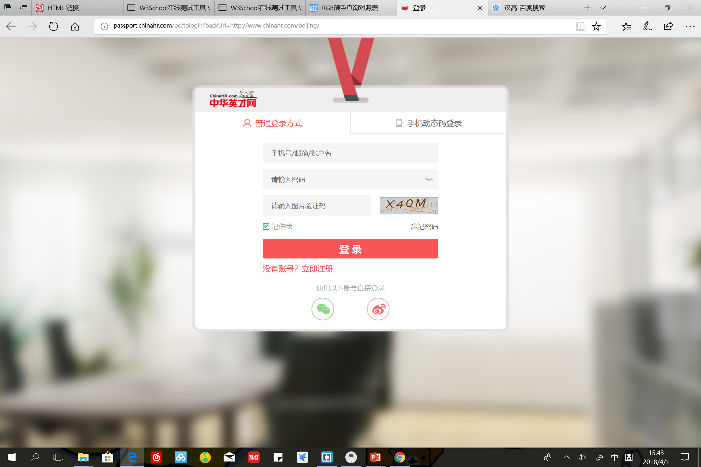
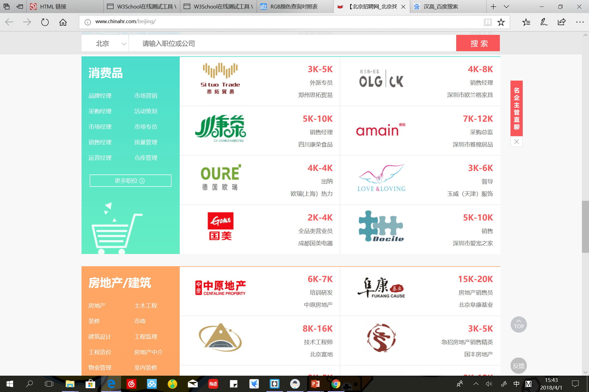
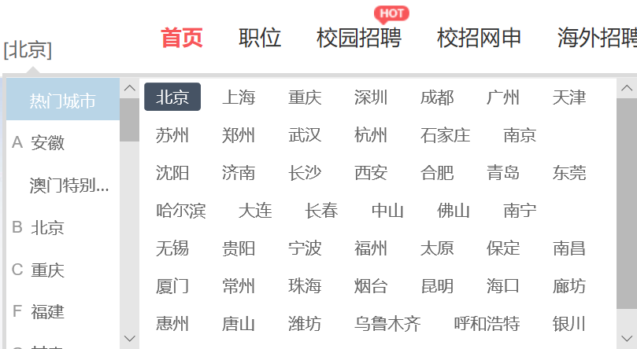

For this website, you might want to register an account and upload you resume, because you will be able to apply directly from the website

You could register with you phone number and link it with your Wechat.
This website categorizes job information in fields and industries, such as Finance, FMCG, Internet and etc.


You can also select select job positions by city or region.

In all, this website cooperates with some giants in different industries. Have a look.